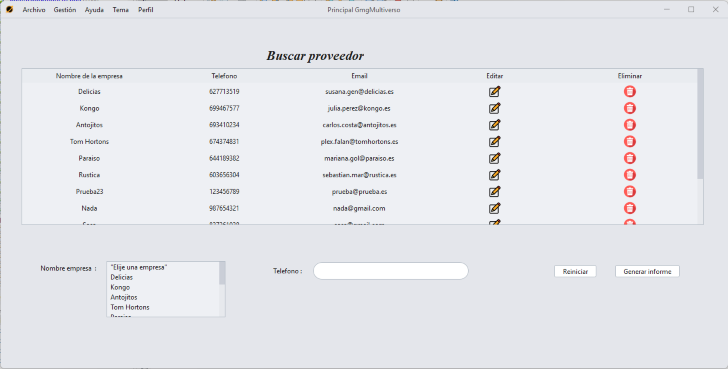
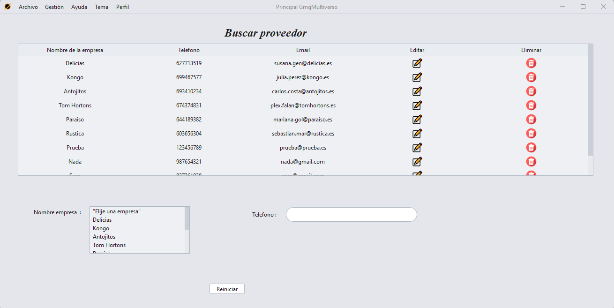
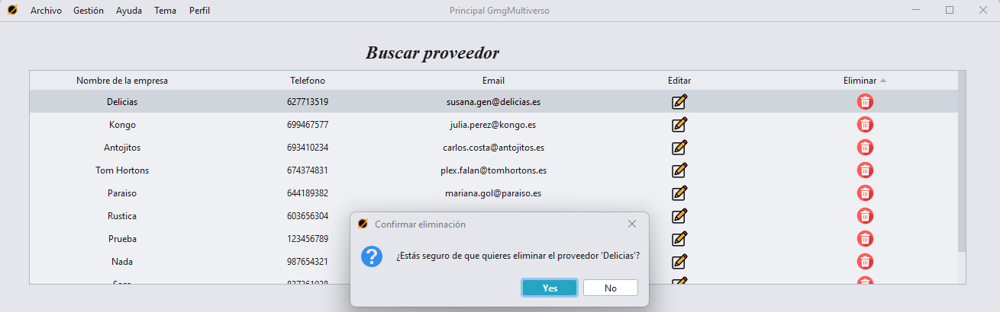
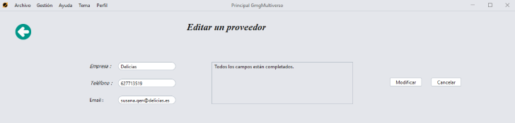
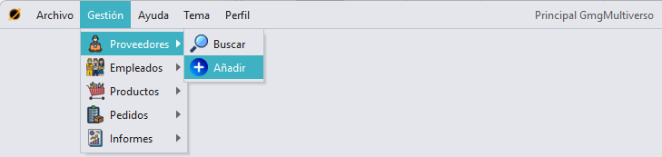

Buscar
proveedor
Para acceder a la sección de busqueda de un proveedor, tenemos que
pulsar en la sección "Gestión" en el menú superior, pulsar
"Proveedores" y luego "Buscar".

Observaremos una tabla y 2 elementos por los cuales podremos filtrar, por nombre de la empresa y número de teléfono.
Además,
se puede filtrar tanto por separado como en conjunto, es decir, puedes
filtrar solo por nombre de empresa o solo por teléfono, o filtrar
primero por ejemplo por nombre de empresa y luego por telefono, te
saldrá una búsqueda conjunta.

Eliminar / Editar un proveedor
Pulsando en la tabla, el icono de una papelera, se eliminará un proveedor.

Para editar un proveedor, solo tenemos que pulsar el icono de un lápiz para que se nos cargue la opción de editar del proveedor seleccionado.

Añadir un proveedor
Para
acceder a la sección de añadir un proveedor, tenemos que pulsar en la
sección "Gestión" en el menú superior, pulsar "Proveedores" y luego
"Añadir".


GMG Multiverso